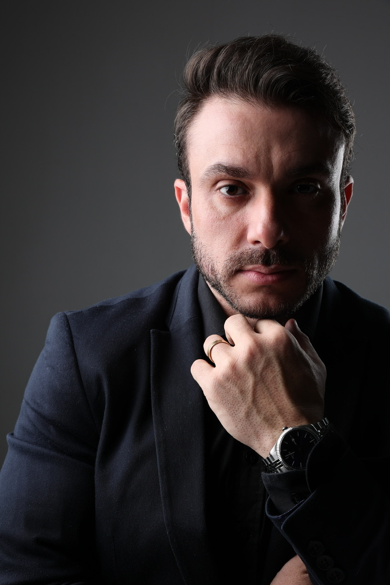
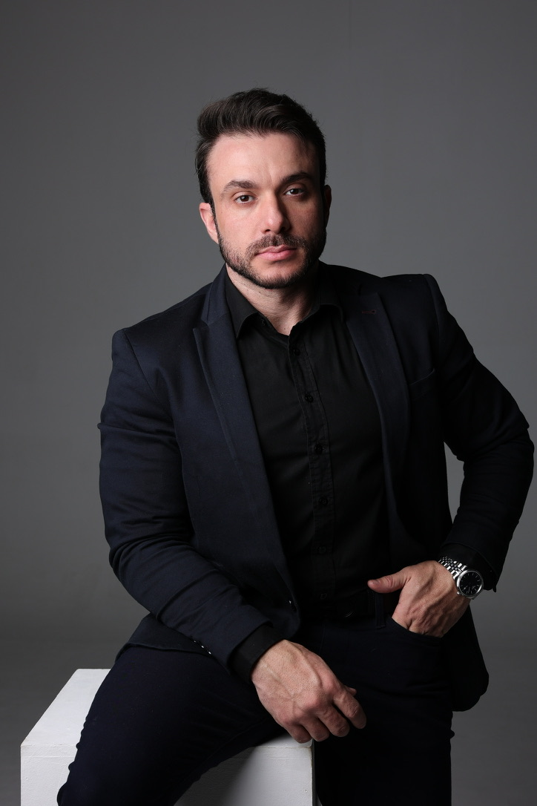
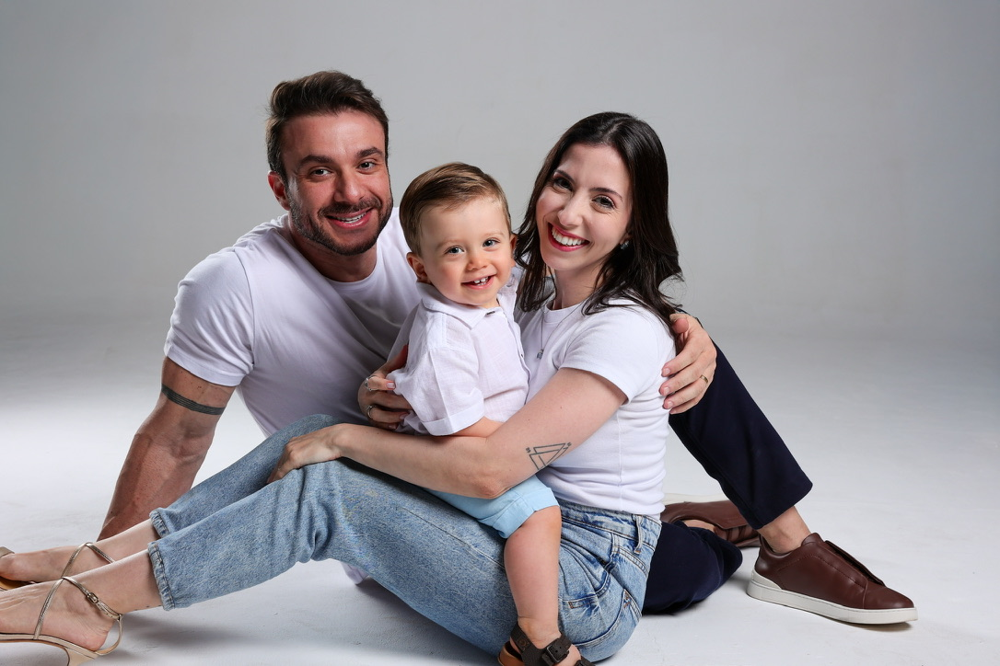

Médico com atuação em emagrecimento, saúde hormonal, lipedema e qualidade de vida — presencial em Londrina e online para todo o Brasil.
Agendar pelo WhatsApp
Quando o corpo está desequilibrado — hormonal ou metabolicamente — nenhuma dieta ou academia resolve sozinha.
Dificuldade em emagrecer mesmo com dieta e exercícios
Cansaço constante sem explicação aparente
Inchaço e retenção de líquido que não passa
Diagnóstico de lipedema sem saber por onde começar
Alterações de humor, libido e disposição
Sintomas da menopausa afetando sua qualidade de vida

"Porque eu já estive lá. Fui meu primeiro paciente de emagrecimento e reposição hormonal."
Senti na pele o que o excesso de peso e o desequilíbrio hormonal causam — no corpo, na autoestima, nas relações e na energia pra viver. E quando tudo foi tratado e otimizado, entendi que isso vai muito além da balança.
Essa experiência moldou a forma como atendo. Não como alguém que só estudou o problema — mas como alguém que viveu e resolveu.
Avaliação completa metabólica e hormonal para um plano individualizado e sustentável.
Tratamento da menopausa, perimenopausa e desequilíbrios hormonais com protocolos personalizados.
Avaliação e tratamento da deficiência hormonal masculina, incluindo implantes subcutâneos.
Diagnóstico e acompanhamento clínico do lipedema, em Londrina e online, com abordagem integrada e humanizada.
Tratamentos que aliam saúde, bem-estar e resultados estéticos com base clínica.
Atendimento para todo o Brasil. Mesma dedicação e qualidade, de onde você estiver.
"Perdi 18kg em 4 meses com acompanhamento real. Nunca me senti sozinha no processo — o Dr. Diego estava presente em cada etapa."
"Finalmente entendi meu corpo. Lipedema sob controle e disposição que não tinha há anos."
"Menopausa controlada, voltei a dormir bem e a ter qualidade de vida de verdade."
Entendo o que significa querer ter energia, disposição e saúde para estar presente nas pessoas que você ama. É isso que me move em cada consulta.
Quero agendar minha consulta
Tudo começa com uma avaliação completa — histórico, exames e análise metabólica e hormonal — para entender por que o seu corpo está resistindo a emagrecer. A partir daí, o Dr. Diego monta um plano individualizado, que pode incluir mudanças de estilo de vida, tratamento de desequilíbrios hormonais e, quando há indicação, medicações. O acompanhamento é contínuo, com reavaliações ao longo de todo o tratamento.
O lipedema é uma condição crônica em que há acúmulo desproporcional de gordura, principalmente nas pernas e nos braços, muitas vezes com dor, sensibilidade e facilidade para formar hematomas. Não é falta de dieta nem de exercício — é uma doença reconhecida, que merece diagnóstico e acompanhamento médico. Embora não exista cura definitiva, o tratamento clínico ajuda a controlar os sintomas, frear a progressão e melhorar a qualidade de vida. O Dr. Diego Silva realiza o diagnóstico e o acompanhamento do lipedema em Londrina e também por consulta online.
Se sintomas como ondas de calor, insônia, alterações de humor, queda de libido ou ganho de peso estão atrapalhando a sua rotina, vale conversar com um médico — inclusive na perimenopausa, a fase de transição que antecede a menopausa. A reposição hormonal não é indicada para todas as mulheres: a decisão nasce de uma avaliação individual, com exames e análise do histórico, pesando benefícios e riscos caso a caso.
Sim. A queda da testosterona — às vezes chamada de andropausa — pode causar cansaço, perda de massa muscular, queda de libido e alterações de humor. Quando a deficiência é confirmada por exames e avaliação clínica, a reposição hormonal masculina pode ser indicada, incluindo a opção de implantes subcutâneos. O tratamento é sempre individualizado e acompanhado de perto.
A consulta online é feita por videochamada, com a mesma estrutura da presencial: escuta do seu histórico, análise de exames e definição do plano de tratamento. Receitas e pedidos de exame são emitidos digitalmente e valem em todo o Brasil. Quando o caso pede avaliação física presencial, o Dr. Diego orienta o melhor caminho.
O atendimento presencial é em Londrina, no Paraná. Quem está em outra cidade ou estado pode optar pela consulta online, disponível para todo o Brasil. O agendamento é feito pelo WhatsApp: (43) 98843-2662.
Atendimento presencial em Londrina e online para todo o Brasil.
Agendar pelo WhatsApp